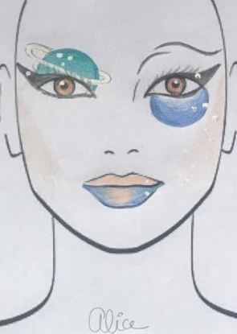
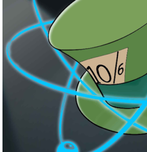
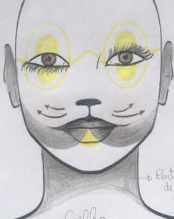
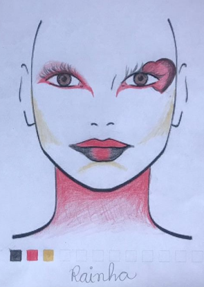
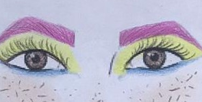
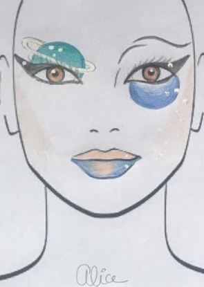
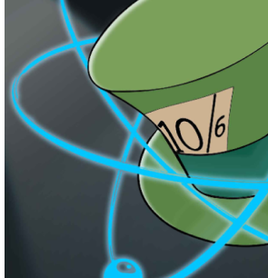
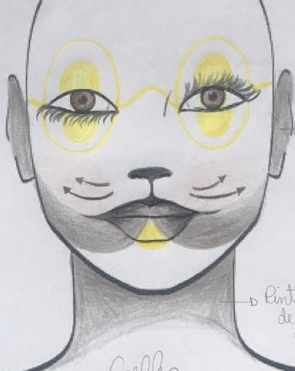
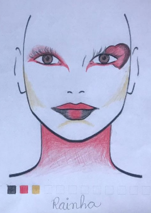
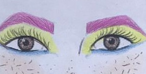

Alice Quântica
Alice Quântica

O PROJETO ALICE
Alice Quântica
Iniciado em 2015, o “Projeto Alice” teve seu primeiro ato ao encenar a peça “Alice Quântica”, escrita por Walmor Cardoso Godoi, com revisão técnica de Awdry Miquelin, Luciana Rocha Hirsch, Marlos de Oliveira Ribas, Nestor Cortez Saavedra Filho e revisão artística de Laudemir Baranhiuc , Maurini Souza e Ismael Scheffler. Segundo registro na Biblioteca Nacional, este texto teatral foi inspirado e adaptado do livro “Alice no País do Quantum” de Robert Gilmore, com tradução de André Penido e publicado pela editora Zahar, Rio de Janeiro, 1998.
Alice, o mundo não é chato!
O enredo de “Alice, o mundo não é chato!” se fundamenta no retorno de Alice ao mundo de Physis (remete ao primeiro projeto, Alice Quântica, de 2015) após ver sua digital influencer preferida garantir que a Terra era plana, e de forma enfática. A partir disso e pela inquietação de Alice quanto ao absurdo (para ela) da afirmação da blogueira, Alice busca respostas no mundo quântico de Physis, agora denominado New Physis, uma vez que o reino quântico está sendo governado com base em achismos e inverdades científicas. É neste contexto que a peça se desenvolve, em uma busca pela verdade científica em contraponto as inverdades impostas por pós-verdades. A realidade traz à tona a percepção de que o texto da peça, que se encontra no capítulo de resultados, é extremamente atual e relevante, uma vez que a divulgação de fake News nunca esteve tão em alta quanto agora, principalmente no Brasil.
A estreia de “Alice, o mundo não é chato!” está programada para 2022, pois quando do início do projeto, em março de 2020, iniciou-se também a pandemia de Covid-19 pelo mundo.


EDUCAR
EM TEMPOS DE PÓS-VERDADE
Mesa Redonda
Em setembro de 2020, em meio à pandemia de Covid-19, como parte integrante do projeto “Alice, o mundo não é chato!”, foi realizada uma Mesa Redonda Online, com o título “ Educar em tempos de pós-verdades: terraplanismos e afins”.
Como debatedores:
Apresentação fragmento peça teatral vídeo Gruta
“Alice: A terra não é chata”
Prof. Laudemir Baranhiuki - Colégio Estadual do Paraná

Os Saberes Geográficos No Ensino Fundamental II
Profa. Telma Alves Satel - Colégio Estadual do Paraná

Do caos ao absurdo:
A necessidade de ordenar para criar
Prof.ª Dr.ª Leila Inês Follmann Freire Universidade Estadual de Ponta Grossa – UEPG

Consenso Científico
Versus Negação
Prof. Msc. Julio Cesar Muchenski Colégio Estadual do Paraná

A Mesa Redonda Online: Educar em tempos de pós-verdades pode ser encontrada no endereço eletrônico:
https://www.youtube.com/watch?v=K_gymzWlQzA&t=1s
Alice,
a Terra não é chata!
Fragmento teatral feita pelos alunos do grupo de teatro GRUTA do Colégio Estadual do Paraná - CEP em parceria com a UTFPR Campus Curitiba. A direção foi feita prof. Lau Bark.
O vídeo foi apresentado no evento de extensão online, coordenado pelo Prof. Walmor Godoi UTFPR e intitulado "Mesa Redonda Online: Educar em tempos de pós-verdades: terraplanismos e afins. em 22/09".
O evento está completo no canal no YouTube!
Guia pedagógico
Professores e alunos: Este guia pedagógico foi concebido para o acompanhamento pari-passo do texto da peça “Alice, o mundo não é chato!”, que poderá subsidiar um melhor entendimento dos conceitos científicos presentes em determinados trechos da obra. Use e abuse!
FAQ
Galeria
 









Parceiros